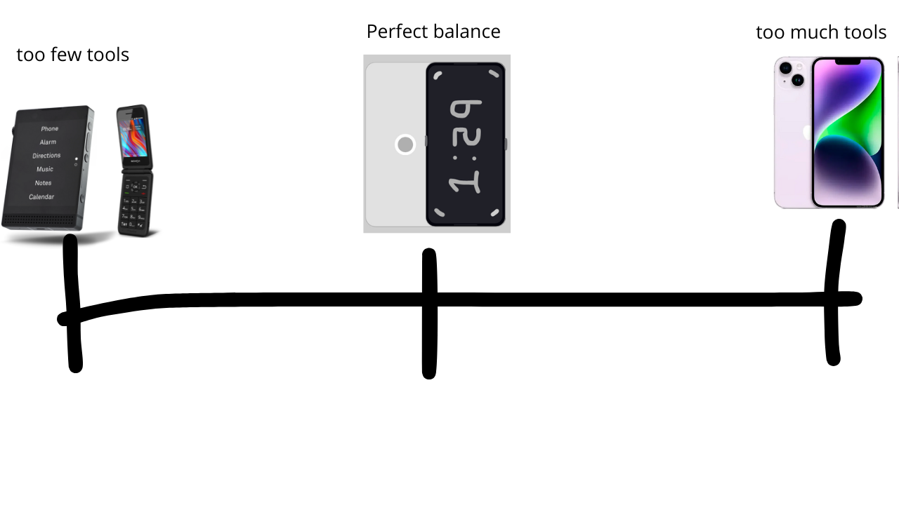

The idea:
Sometimes phones have too much tools, most of the time, tools we dont even need,
and there are phones for solving that problem, the lightphone, or a flip phone,
but those phones lack nessesary tools,
so i thought about the perfect balance.

The two most damaging and most used tools by young people are:
I've been addicted to the two, i wrew up with these addictions, i know how to quit this type of addiction.
There are three ways, the first is to use the power, of the mind, but that doesn't
work for most people, the other thing i found works is to make really hard to do the bad habit,
like selling your phone or buying a dumb phone, but i still need uber and whatsapp.
If you dont do that, you will always have your phone with you, so you have your
bad habits with you, because you need your phone.
If its impossible to make your bad habits, you are not going to make them.
i noticed two things in common in sm and porn addiction
-
Infinite Scroll
-
People
This phone that i call the circle 1.2 uses an AI that lives in your phone to see the pixels
in your screen, in real time puts a black box on people faces, and bodies, also on
infinite scrolling sections, it doesnt block complete apps or websites, just blocks
what never should have been.
You can still create on social media, we want to build a community of creators,
rather than consumers.
Here you can try the first version for windows
Next Steps
Get the most people as interested as posible.
Apply:
-
Thiel Fellowship
-
Founders INC
-
YC
Campains: